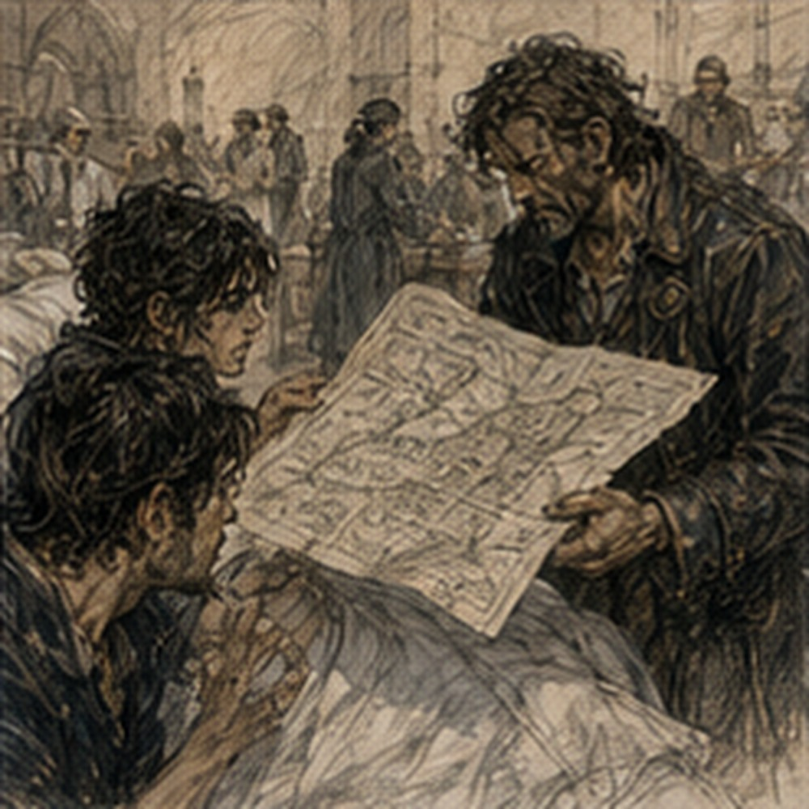
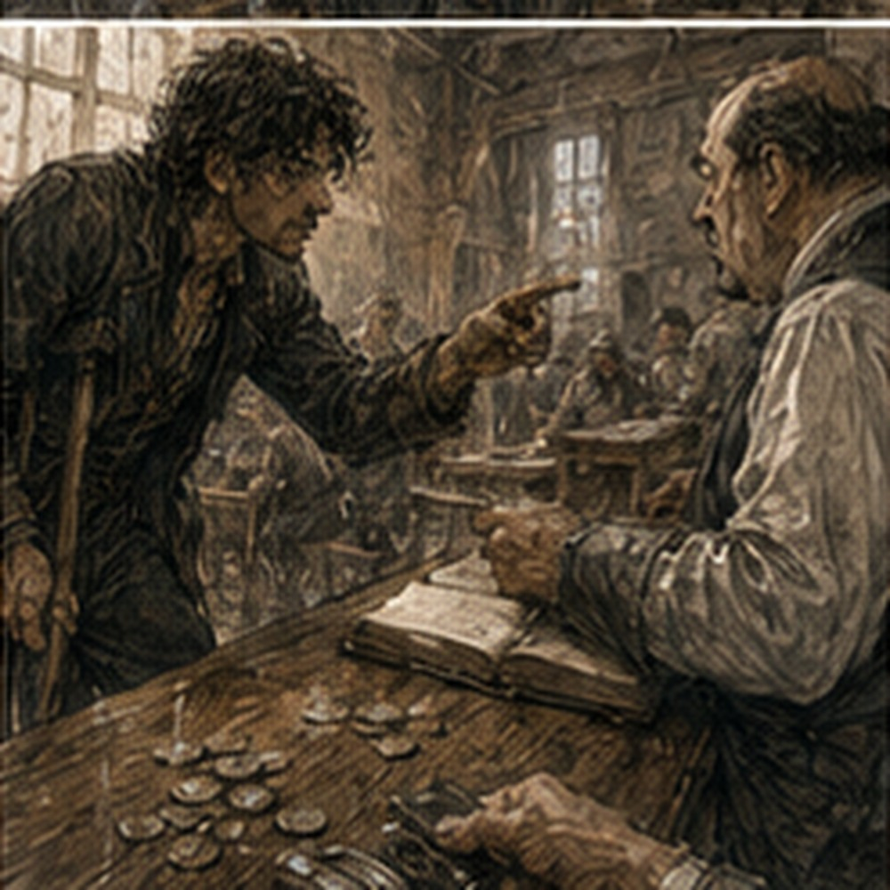

Sera asked how many stairs were in my lodging. I had sent Jorren to count them. This was already humiliating.
“Fourteen,” I said.
“Straight?”
“Twelve, landing, two.”
“Rail?”
“Wall.”
“That isn't a rail.”
“It has successfully remained a wall.”
“Which side?”
I stopped. Going up? Right, probably. Going down? Left. Maybe. I had climbed those stairs every day for months and could not describe them. Sera watched me fail.
“I'll ask Jorren.”
“He counted stairs, not architecture.”
“Then he can go back.”
“This is becoming expensive.”
“For him?”
“For my dignity.”
“Already gone.”
I looked at her. She checked the dressing. The dark margin had improved. Not disappeared. Improved. She pressed lightly around it.
“Pain?”
“Yes.”
“Same?”
“Less sharp.”
“Drainage is down. No fever. Tissue response is acceptable.”
“Acceptable?”
“Yes.”
“Revision?”
“Less likely.”
“Discharge?”
“Not today.”
“Tomorrow?”
“Maybe.”
Bad unit.
“What do I have to do?” I asked.
“Transfer safely. Stand without trying to invent a second floor contact. Show me you can manage basic needs with help available. Wound stays stable,” Sera said.
“Crutches?”
“Possibly trial tomorrow.”
There. A future. Small. I wanted it too much.
“What about stairs?”
“Not until someone trains you.”
“I know stairs.”
“You knew stairs with two feet.”
“I know mechanics.”
Sera gave me a look. I hated that look. It was the same look Pessa had given me when I tried to turn road priority into religion.
“Fine.”
“Also,” Sera said, “your room may not be the first place you go.”
I stared.
“What?”
“If fourteen stairs are the only access and you cannot safely manage them yet, you need somewhere else.”
“No.”
“That was not a question.”
“My room is paid.”
“Wonderful.”
“My food is there.”
“Less relevant.”
“My things are there.”
“Yes.”
“I'm going home.”
“Eventually.”
“No. When discharged.”
“Discharge means you no longer need this bed. It does not mean every building becomes accessible because you dislike alternatives.”
I felt anger. Immediate. Hot.
“Accessible.”
“Yes.”
“I can get up fourteen stairs.”
“Today?”
“Yes.”
Sera looked at the parallel rails. I followed her eyes. Fuck.
“Not today.”
“Then we agree.”
“We do not.”
“We agree about today.”
I hated professionals. Sera finished the dressing.
“Find out the rail situation. Find out whether the washroom is on the same floor. Find out where the toilet is. Find out whether you can get food without carrying it up stairs yourself.”
“I know where I live.”
“Then these should be easy questions.”
They were not. That was worse.
*
Jorren returned at noon with a drawing. A terrible drawing.
“This is a staircase?”
“Yes.”
“It looks like a dead centipede.”
“Fourteen steps.”
“Twelve plus two.”
“I wrote that.”
He had. Tiny marks. Landing. Door. Wall.
“Rail?”
“No rail.”
“Wall left going up?”
“Mostly.”
“Mostly?”
“There's a window.”
“How long?”
He stared.
“The window?”
“Yes.”
“I don't know.”
“Go back,” I said.
“No,” Jorren said.
“Jorren.”
“I have work,” he said.
“Measure the window.”
“With what?”
“Your body.”
“No.”
“Forearm lengths.”
“No.”
“Handspans.”
“No.”
“Why are you useless?”
“Because I have two legs and employment.”
I threw the folded drawing at him. He caught it. Good reflex.
“Washroom?”
“Downstairs.”
I stopped.
“What?”
“The bath room. Ground floor behind kitchen.”
“I know.”
“You asked.”
“Toilet?”
“Yard.”
Of course. The lodging had a privy in the rear yard. Downstairs. Across kitchen. Small threshold. Outside. I knew this. I had used it. Daily. My brain had filed it under nothing.
“Night?”
“What?”
“If I need to piss at night.”
“Pot.”
“No.”
Jorren looked at me. I looked at him.
“No.”
“You currently use one.”
“In infirmary.”
“So?”
“So I am not putting a chamber pot in my room.”
“Why?”
“Because I am nineteen.”
“That sentence has stopped meaning what you think.”
Fuck him.
“Food?”
“Keeper says she'll send a plate up for a few days.”
“I didn't ask.”
“I did.”
“Why?”
“Because you asked me to inspect your staircase like a siege engineer.”
“I asked you to count.”
“You then demanded window dimensions.”
“Important.”
“Why?”
“I don't know yet.”
Jorren rubbed his face.
“There's another room downstairs.”
I stared.
“What?”
“Small one behind the kitchen. Keeper uses it for storage.”
“No.”
“I didn't say anything.”
“You were going to.”
“She said you could use it for a few days if needed.”
“No.”
“Fine.”
“My room.”
“Fine.”
“Upstairs.”
“Fine.”
He folded the staircase drawing. I snatched it back. He smiled. Asshole.
“Anything else?”
“Yes.”
He groaned.
“Door width.”
“No.”
“Jorren.”
“No.”
“Chair width.”
“You don't own a chair.”
“I currently use one.”
“You're not taking the infirmary chair.”
“How do you know?”
“Because it says infirmary on it.”
I looked at the chair. Tiny burned mark under the arm. Guild infirmary. Fine.
“Then nothing.”
“Good.”
He stood.
“Wait.”
“What?”
“Arlo?”
Jorren stared.
“I am not your information clerk.”
“Did he test the shim?”
“I don't know.”
“Sevren?”
“Still north.”
“Alden?”
“Training.”
“Pessa?”
“Work.”
“Dorn?”
“River yard.”
“Antonius?”
“Probably stealing someone's house.”
“Storage.”
“Same.”
Jorren left. The room went quiet. I unfolded his drawing. Fourteen stairs. No rail. Window interrupting wall contact. Bath downstairs. Privy outside. My room had become a field problem. I hated that sentence. I hated it more because it was accurate. I could solve field problems. No. Not solve. Assess. Fuck. I folded the paper. Did not write a list.
*
The accident report came back to me after lunch. Not from Hessa. Ressa brought it. Full report this time. She stood at the foot of the bed in her green work coat, though it had been cleaned. No rigging gloves. Her hands looked wrong without them.
“Can I sit?”
“Yes.”
She sat. Placed the report on the table.
“I heard Hessa confiscated your copy.”
“She is a tyrant.”
“She told me you'd say that.”
Conspiracy. Ressa looked at the bandage. Not long. Then my face.
“I wanted to tell you where the yard landed.”
“On my leg.”
She closed her eyes.
“Sorry.”
“That was funny.”
“It wasn't.”
“It was a little.”
“Greg.”
“Fine.”
She put a hand on the report.
“The plate was ours.”
“Yard's.”
“Yes.”
“The test?”
“Ours.”
“Accepted by you.”
“Yes.”
“Why narrower wagon?”
“It was available and heavier per wheel than the transfer cart.”
“Track.”
“We didn't treat track as critical because the plate was supposed to span.”
“Supposed.”
“Yes.”
“Did anyone know about the underside notch?”
“No.”
“Rot?”
“No.”
“Fastening hole?”
“We could see the top iron. Not the propagation underneath.”
“Could you have lifted the plate before testing?”
“Yes.”
There.
“Why didn't you?”
“Because the surface was sound, the plate had been in ordinary yard service, and we were testing it above expected wheel load. We inspect hundreds of covers, ramps, skids, and temporary decks. We do not dismantle every one before every load.”
“Should you?”
Ressa looked at me.
“No.”
I hated that answer.
“Why?”
“Because then the yard stops functioning and we create other hazards by tearing apart sound infrastructure constantly.”
Reasonable. Fuck.
“Actual cart?”
“Could have used it.”
“Why didn't you?”
“Because it was staged at the barge and the test wagon was already loaded. The wheel load margin was better.”
“Track.”
“Yes.”
“Now you care.”
“Yes.”
There. After.
“What about the pallet?”
“Yard freight crew moved it after dry run. Four inches.”
“Should have recleared lane,” I said.
“Yes,” Ressa said.
“Whose responsibility?” I asked.
“Mine,” she said.
Immediate. I looked at her. She did not look away.
“Not mine?”
“You were assigned to watch the blind clearance interface during the transfer. The yard owns keeping the lane clear.”
“I saw the pallet.”
“During dry run.”
“I could have checked again.”
“Yes.”
“Then?”
“Then maybe you tell us to move it four inches.”
“Would that have changed my turn?”
“Maybe.”
“Would the wheel have missed?”
“I don't know.”
“Could.”
“Yes.”
“So I should have checked.”
Ressa's jaw tightened.
“Greg.”
“What?”
“If you're asking whether there was a thing you could have done differently, yes.”
I stopped. There.
“If you're asking whether I expected you to inspect every yard object after every other worker touched the lane, no.”
“But I could have.”
“Yes.”
“And if I had.”
“Maybe you still get hit.”
“Maybe not.”
“Yes.”
I hated yes. I wanted no. Or guilt. Clean guilt. Mine. Hers. Somebody's. Ressa said, “I signed the final go.”
“You didn't know.”
“No.”
“Still signed.”
“Yes.”
“Do you think you fucked up?”
She looked at me for a long time.
“Yes.”
There. My chest tightened. Then she continued.
“And no.”
Fuck.
“The test plan was reasonable. It was also incomplete. The lane control was reasonable. We should have recleared it. The recovery was reasonable based on what we knew. The plate failed farther than we could see. I own the operation. That means I own the outcome enough to change how I run the next one.”
“That's not the same as causing it.”
“No.”
“Then what does owning mean?” I asked.
“Work,” Ressa said.
I stared. She tapped the report.
“We replaced every timber cover in that lane yesterday.”
“All?”
“All.”
“Wasteful?”
“Probably some.”
“Inspected undersides?”
“Yes.”
“Found anything?”
“One more with early rot.”
There.
“Would it have failed?”
“Don't know.”
“Notch?”
“No.”
“Track test?”
“New procedure. Same cart or matched track where the deck isn't independently rated.”
“Escape lanes?”
“Reclear immediately before movement.”
“Who checks?”
“Named yard lead.”
Not Greg. Not some floating responsibility. Named. Good.
“Did you change recovery procedure?”
“Not generally.”
“Why?”
“Because the recovery was not obviously wrong.”
“But lateral load.”
“Expected.”
“Amount?”
“Within what Marn believed the hoist could hold.”
“Did it?”
“Yes.”
“Then cart yaw.”
“From wheel drop.”
“So recovery didn't cause plate failure.”
“Movement changed load distribution.”
“Yes.”
“Could have failed going forward.”
“Yes.”
“Could have failed under static.”
“Yes.”
“Could have held.”
“Yes.”
I wanted to scream. Instead I said, “This is useless.” Ressa nodded.
“Yes.”
I looked at her. She looked tired. Not guilty exactly. Not absolved. Working.
“Dorn?”
“Fine.”
“Marn?”
“Fine.”
“Frame?”
“Transferred next day.”
I stared.
“What?”
“With a different cart and steel plates over the channel.”
“The frame moved?”
“Yes.”
Of course. The job finished. Not that day. Next day. Without me.
“Who watched clearance?”
“Bram.”
I knew Bram. Timber lead from north arch. Minor person. Competent enough.
“Did it work?”
“Yes.”
There it was. My job. Filled. Operation completed. Nothing symbolic. Just work.
“Good,” I said.

It sounded wrong. Ressa heard.
“Greg.”
“What?”
“You were preferred because Dorn said you stop early.”
“I know.”
“You did.”
“I know.”
“The job didn't fail because you failed to stop.”
“I know.”
“Do you?”
I felt anger.
“Do not do this.”
“Do what?”
“Tell me what the accident means.”
“I wasn't.”
“You were about to.”
“No. I was telling you what one part does not mean.”
I looked at the report. Fair. Still hated it. Ressa stood.
“I have to go.”
“Work?”
“Yes.”
“What?”
“Warehouse hoist inspection.”
“Because of this?”
“No. Scheduled.”
Of course.
“Ressa.”
She stopped.
“Would you hire me again?”
Silence. There. I had not planned to ask. Her eyes moved once toward the bandage. Then back.
“For that job?”
“Yes.”
“Today?”
“No.”
“When healed.”
She took too long. Not pity. Calculation.
“I don't know what you'll be able to do.”
There. Sharp. Correct. I looked away. Ressa said, “That isn't no.”
“It isn't yes.”
“No.”
Good. Bad. Real. She left. I stared at the door. Valued. Maybe. Useful. Unknown. Different questions. I did not like either.
*
Arlo arrived an hour later with Vessa. Vessa carried the regulator body wrapped in cloth. I laughed.
“What?”
“You brought it here.”
Arlo said, “You complained I didn't need you.”
“I did not.”
“You did with your face.”
Vessa put the regulator on the table.
“Shim test failed.”
“Failed how?”
“Flutter worse.”
Excellent. I forgot my leg for perhaps twenty seconds.
“Heat transfer?”
“Maybe,” Arlo said.
“Spacing?”
“Stable.”
“Torque?”
“Same.”
“Shim location?”
Vessa showed me. Thin brass. One side.
“Uneven contact?”
“That's what I think,” she said.
Arlo said, “I think heat path.”
“Both.”
“Maybe.”
“Remove shim?”
“Already did.”
“And?”
“Back to smaller flutter.”
Good. Not solved. I touched the regulator. Then stopped. Not mine.
“Could mount face itself move hot?”
Vessa said, “Measured.”
“How?”
She described it. Competent.
“What about fasteners?”
Arlo said, “Next.” There. They had a plan. Again. I leaned back.
“Why are you here?”
Vessa said, “Arlo wanted to show you.” Arlo looked offended.
“You came too.”
“I wanted to see if you'd gotten less annoying.”
“Result?”
“No.”
Good. They stayed fifteen minutes. Maybe twenty. We talked about the regulator. Not my leg. Then Vessa said, “Can you reach our shop step yet?”
“No.”
“Good.”
“Fuck you.”
“Recover faster.”
They left with the regulator. I felt better. Then worse. Because feeling better had been easy. Then better again because that was stupid.
*
Second standing was not second anymore. Third? Fourth? Counting became complicated because attempts mattered differently. That afternoon Sera let me practice transfer from bed to chair with Nerin touching only if needed. He needed to touch once. At the hip. Small correction. I hated it less. Then rails. Stand. Right foot. Hands. No left contact. I said it before Sera asked. She nodded.
Up. The phantom foot planted anyway. I let it. Not obeyed. Let it lie. My actual body stayed over the right foot and hands. Thirty seconds. Then forty. Then Sera said, “Sit.” I sat. No argument.
“Again?”
“Later.”
Fine.
“Tomorrow crutches?”
“Maybe.”
“Bad unit.”
“Yes.”
She checked my blood pressure.
“Discharge still possible tomorrow or day after if wound remains stable.”
“To my room?”
“To a safe place.”
“My room.”
“Prove it.”
“How?”
“Stairs.”
“You won't let me use crutches.”
“Tomorrow has many ambitions.”
I smiled despite myself.
“Can I crawl?”
Sera stared.
“What?”
“Up stairs.”
“No.”
“Why?”
“Because your fresh surgical wound does not need you dragging yourself through a lodging stairwell.”
“Could sit and lift.”
“Later.”
“Hands and right foot.”
“Later.”
“Someone behind.”
“Greg.”
“Fine.”
But I was thinking. Not designing a prosthetic. Not rebuilding my life. Just fourteen stairs. A problem. I stopped. No. A condition. Fuck. Everything had become language.
*
Before Alden arrived, Jorren appeared holding my left boot. Or what remained of it. The leather had been cleaned. Mostly. A dark stain remained near the ankle. The upper had been cut down one side, probably during the yard or infirmary work. The sole was twisted. It was no longer really a boot. I stared. Jorren lifted it slightly.
“Dorn found it with the yard things.”
“Tam asked.”
“I know.”
“Everyone knows everything.”
“Yes.”
“Put it somewhere.”
“Where?”
Not kitchen table. Not beside food. Storage room. I led him in. He put it beside the sword. Wrong.
“Other side.”
“Greg.”
“Fine.”

He moved it near the folded table. The boot sat on its side. Empty. Leather. Tam could salvage leather. That was all. I did not touch it. Jorren watched me not touching it.
“What?”
“Nothing.”
“Face.”
He smiled.
“Green door?”
“No.”
“Why?”
“Tired.”
“Good.”
“Stop.”
He left. The boot remained in the room. Not a relic. Not a plan. An object I owned that had become materials. I hated that sentence. So I refused it. Boot. Damaged boot. Enough. Alden came near evening. Sweaty. Training. He smelled terrible.
“Good.”
“What?”
“You trained.”
“Yes.”
“What did you do?”
“Sword.”
“Obviously.”
“Pessa ran rounds.”
“Timing?”
“Better.”
“Did you still rush after feints?”
“Less.”
“Who told you?”
“I know you.”
He frowned.
“Sometimes.”
He sat. I showed him Jorren's staircase drawing. He stared.
“What is this?”
“My home.”
“No.”
“Fourteen stairs.”
“Why does the staircase have legs?”
“Jorren.”
“Ah.”
“I may not be able to go home.”
Alden stopped smiling.
“Because stairs?”
“Yes.”
“You'll learn.”
“Eventually.”
“Then where?”
“Downstairs storage room.”
He looked at me.
“No.”
“Correct.”
“Why not?”
“It's a storage room.”
“You sleep in a room with cracked plaster.”
“That is my cracked plaster.”
Fair. Alden picked up Secretary.
“You could stay at Guild.”
“No.”
“Jorren?”
“I don't know his stairs.”
“You have a problem.”
“Yes.”
He looked at the drawing again.
“Can you hop?”
“Sera would kill me.”
“Later.”
“Yes.”
“Could someone carry you?”
“No.”
“That's not physics.”
“No.”
“Why?”
I looked at him. He understood.
“Right.”
We sat. Then he said, “I could.”
“No.”
“I know.”
“Good.”
“I was just saying.”
“Don't.”
“Fine.”
He put the horse down.
“We're not sparring next week.”
“I crossed it out.”
He looked at the calendar.
SEE ALDEN?
“You put a question mark.”
“Yes.”
“Remove it.”
“What?”
“I'll come.”
There. Not work. Not training. Not usefulness. Just annoying.
“Why?”
“Because I said.”
“Bad reason.”
“Works.”
I took the pencil. Removed the question mark. Not elegantly. Alden nodded.
“Good.”
Then he left because he had dinner with someone. He did not tell me who. I did not ask. Progress.
*
Before dinner, Nerin took me to the washroom. Not the bath. A washroom inside the infirmary. Sixteen feet away. Chair. Transfer. Basin. Privacy, allegedly. The door was narrow enough that Nerin had to angle the chair. I noticed. Of course I noticed.
“Width?”
“No.”
“What?”
“You're about to ask.”
“I wasn't.”
“You looked at the frame.”
“Observation is not a crime.”
“Today.”
He parked beside a low bench. I washed my face. Arms. Chest. The rest became logistics. I had never considered how often standing made washing easy. You stood. Turned. Reached. Shifted. Used both legs without assigning them jobs. Now every movement needed somewhere for weight to go.
I braced one hand on the bench and immediately tried to brace through the missing left foot as I leaned. My hip dipped. Nerin caught the chair.
“I had it.”
“You didn't.”
“I corrected.”
“You say that a lot.”
I sat. Angry. Then looked at the basin.
“Can you leave?”
“Yes.”
He did. Good. I washed what I could. Slowly. The residual limb stayed wrapped and dry. My right sock came off. Putting it back on while seated was stupidly difficult because lifting the right foot removed my only floor contact. I could lean back. Use hands. Balance. Easy. Except my left foot kept trying to become the stabilizer. Three attempts. On the fourth I hooked the sock over my toes.
Victory. Pathetic. Real. I sat there holding a sock and laughed once. No reason. Maybe too many. When Nerin came back, he looked at the sock.
“Congratulations.”
“Fuck you.”
“Consistent.”
On the way back, we passed the infirmary entrance. Blue door. Sunlight outside. People crossed the Guild courtyard. A porter carrying rope. Two Coppers arguing. A woman with flowers. Nobody looked at me for long. Good. One person did. Bad. Then gone. Nerin turned the chair.
For one second I wanted to tell him to keep going. Out. Across courtyard. Home. Fourteen stairs. No rail. Privy outside. I said nothing. Back in bed, I was exhausted. From washing. This was offensive enough that I slept before I could properly resent it.
*
At night I read the full accident report again. Ressa had left it. Hessa would object. Hessa was not there. Excellent. I read slowly. Not reconstructing positions. Mostly. I found another question. The plate had been wet from earlier rain. Did moisture change stiffness? Probably. Was that included in test? Same day. Yes. What about dynamic versus static load during reverse? Report estimated. Could have measured better. What about hoist line angle?
Known. What about cart suspension? Minimal. What about barrel wagon test speed? Slow. Mill cart reverse speed? Slower. What about notch orientation? Unknown until failure. Could have inspected underside. Could inspect every underside. Could inspect fastening holes. Could replace timber by age. Age unknown. Could maintain records. Old modification unrecorded. Could ban unrecorded infrastructure. Absurd. Could require matched wheel track. Now they would.
Could reclear lane every movement. Now they would. Could require two escape lanes. Space limited. Could remove pallet entirely. Freight yard. Could move operation elsewhere. Then different unknowns. I stopped. Not because I had reached wisdom. Because I was tired. There was always another question. That sentence appeared. I did not like it. I crossed it out in my head. Questions were good.
More information was good. Testing was good. Clear roles were good. Stopping was good. All still true. My leg was also gone. Both sets of facts occupied the same room. I hated crowded rooms. I put the report down. My phantom ankle was bent. I straightened the knee. Actual knee. Sera's instruction. The phantom ankle stayed bent. Fine. Let it. Tomorrow I might try crutches.
Maybe. I had fourteen stairs. Maybe. A downstairs storage room. Absolutely not. Arlo had a regulator that still fluttered. Alden would come next week without a question mark. Ressa did not know if she would hire me again. Neither did I. That one stayed. I picked up Jorren's staircase drawing one more time. Fourteen. The number had become insulting. I could hire someone to carry food.
I could use a pot at night. I could wash downstairs when someone helped me. I could sleep in the storage room. All technically possible. That was not the same as going home. Home had not changed. That seemed important. Same stairs. Same cracked plaster. Same oval mirror. Same bed.
Same stupid place where I had woken nineteen and started making lists about how to do a life better. Only one variable had changed. Me. No. That was too dramatic. Many variables. Pain medication. Strength. Balance. Wound. Time. Practice. Fourteen stairs. I folded the drawing. Better. I turned off the lamp.
For the first time since the wheel, I wanted tomorrow to arrive. Not much. Enough.